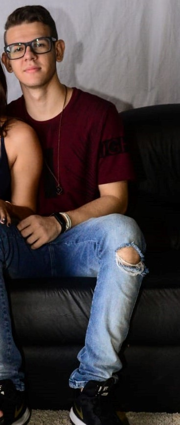

Olá! Sou Jesus Tadeu Desenvolvedor Front-End
Desenvolvedor Front-end com ampla expertise em construção de interfaces responsivas e escaláveis para aplicações web. Minha paixão está em desenvolver soluções tecnológicas que não apenas solucionam problemas reais, mas também proporcionam valor significativo aos usuários.
Saiba Mais!
